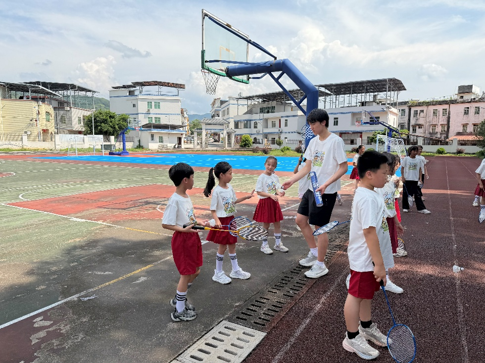
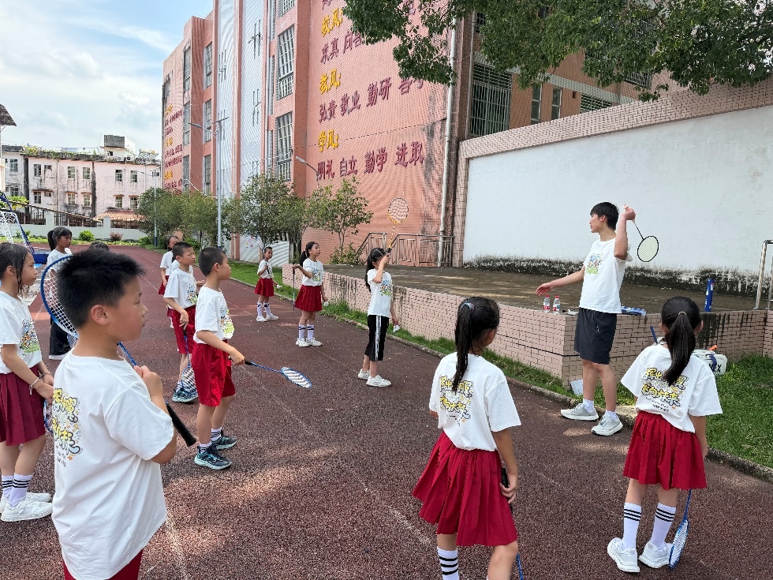
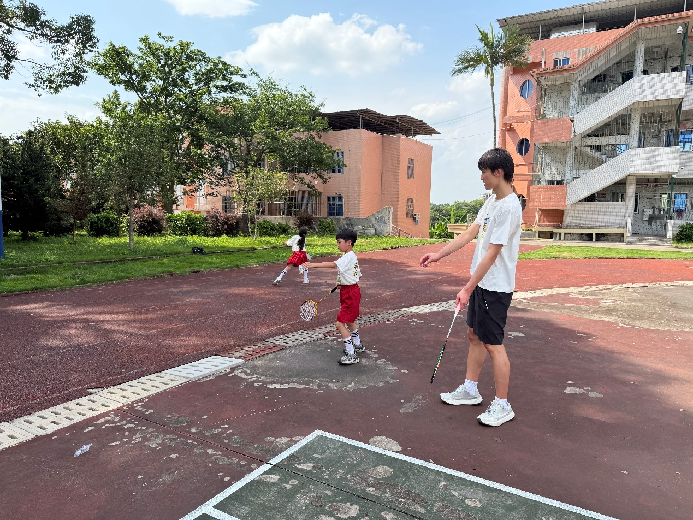
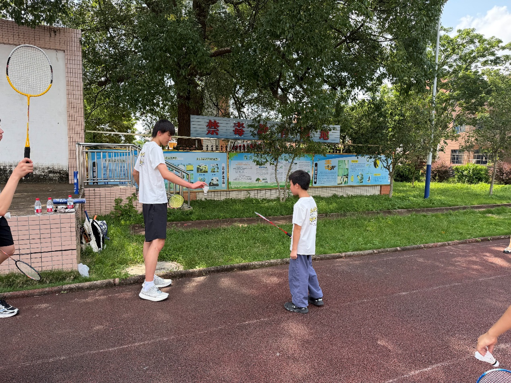
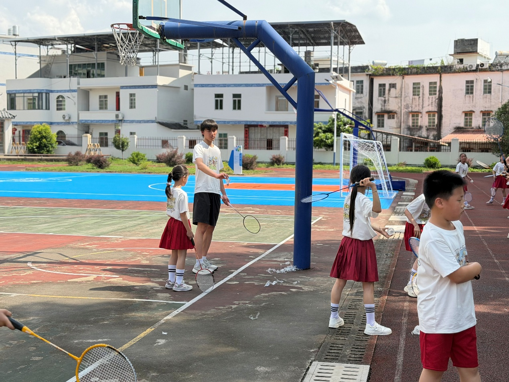
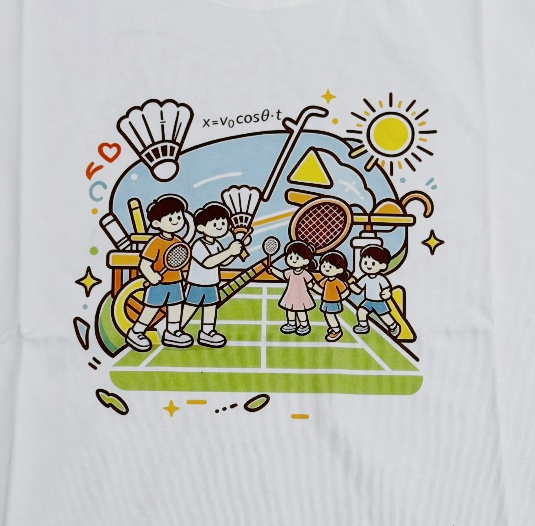
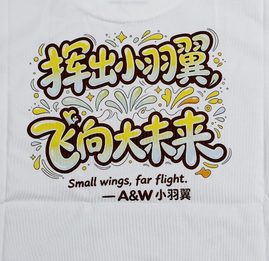
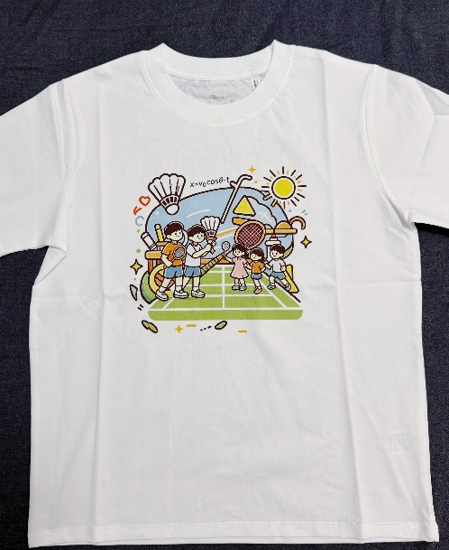
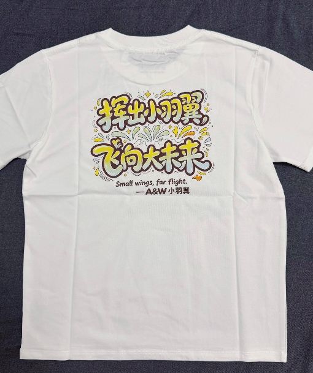

01 · 约定的开始
后来，我去了。
从一个暑假的约定，到一次真正的相见。共同的爱好，让我们再次相聚。
暑假里，我认识了一个小男孩。他很认真地跟我约定: 等你有时间，就来我们学校教我们打球。这句话我一直记着。后来，我真的去了。
孩子们学得特别认真。学校没有羽毛球场地，用的还是打废的旧球。可他们击球时的欢呼是真的，看着他们那一张张开心的笑脸，我也被深深感染了。

从一个暑假的约定，到一次真正的相见。共同的爱好，让我们再次相聚。
暑假里，我认识了一个小男孩。他很认真地跟我约定: 等你有时间，就来我们学校教我们打球。这句话我一直记着。后来，我真的去了。
孩子们学得特别认真。学校没有羽毛球场地，用的还是打废的旧球。可他们击球时的欢呼是真的，看着他们那一张张开心的笑脸，我也被深深感染了。




这次我还给孩子们带了我设计的羽毛球T恤。正面画着我和孩子们在阳光下打球的样子，羽毛球旁边印着一道抛体公式;背面写着我对他们的祝福:Small wings, far flight。
我希望他们像羽毛球那样，带着梦想飞出去，划出属于自己的弧线。



